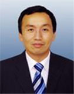

协会新闻
北京交通大学校友企业家协会成立大会暨第一次理事会
日期：2010-09-12 点击：245
|  |
1979级 微电子系
Class 1979 Department of Radio and Electronics
弥亚微电子有限公司 董事长兼首席执行官
Chairman & CEO, Miartech,Inc |
| 熊泉博士，弥亚微电子（Miartech，Inc）董事长兼首席执行官，公司创始人之一。他不仅在微电子等专业领域拥有渊博知识，而且在技术研发、企业运营、战略管理及资本运作等方面拥有丰富经验。从1994年至2004年的十多年时间里，他历任AMD、LSI Logic, Mobilink Telecom 、LinkAir、Vimicro等多家公司的高级研发工程师，项目经理，芯片设计经理，产品研发副总裁、执行副总裁及工程副总裁。2004年，熊泉博士联合创办了Miartech,Inc， 同年7月在上海创办了弥亚微电子（上海）有限公司。 熊泉博士1984年获清华大学电机工程学士学位；1986年5月获美国罗德艾兰州Brown University大学物理学硕士学位；1990年8月获美国罗德艾兰州Brown University大学物理学博士学位；1991至1992在Brown University从事微电子材料的研究； 1993至1994在美国麻省理工计算机科学及机电工程系作博士后，从事深亚微米射频集成电路的研究。 Dr. Peter Xiong is the co-founder, Chairman and CEO of Miartech, Inc. He is responsible for company’s overall operation and execution. Prior to start his own company Miartech, Peter was Vice president of Vimicro Corporation, a leading multimedia IC provider and general manager of Vimicro’s Analog and Mixed signal IC subsidiary in Shanghai, China. Prior joining Vimicro Corporation, Peter Xiong was executive vice president of LinkAir Shanghai. In this position, he is fully responsible for LinkAir Shanghai Operation and has built the subsidiary into a product center for LinkAir communications with teams of system engineering, product engineering and system test, business development and marketing beside general administrative staffs which includes HR, accounting etc. Peter graduated from Tsinghua University (Beijing) with a degree in electrical engineering. He went on to Brown University under CUSPEA (China-US Physics Exam Applications) program scholarship, where he earned his Ph.D. He then worked as an AT&T sponsored post-doctoral fellow at Computer Science and Electrical Engineering Department, Massachusetts Institute of Technology (MIT), where he developed SOI processing technology for deep, sub-micron devices, especially the process technology for RF communication |
|
|